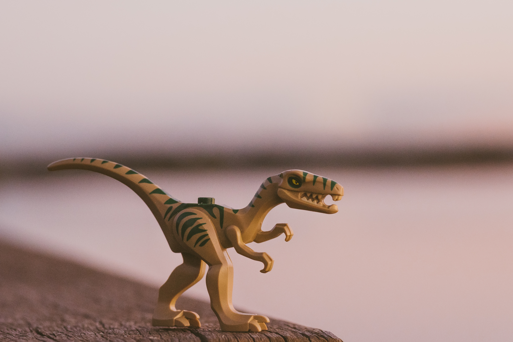

Information About Dinosaurs... With A HaHa Funny
Yes, I Had to Make This Entertaining to Read
The dinosaurs, they lived long ago and dominated da Earf. They were very sucsessful in their survival until they died to a large space meatball that said "imma end this speices whole career" and boom... ded. This was not what the dinosaurs wanted, but the space meatball did not care. This was a great tragedy in da Earf's history. This happened 65 million years ago and changed life as we know it. It opened up the gates to the ice age and eventually the hooman.
Info About Dinosaur Sizes
There were many different types of dinosaurs. Some were tall, somer were long, somer were derpy, some were big and small, some were even c h o n k. Some dinosaurs looked like normal dinosaurs, others looked like weird creep things. There were many dinosaurs that were very small and weighed barely anything. Some were very fat and weighed more than my will to work at my job. My favorite dinosaur is Spinosaurus as it was very cool and not normal looking.